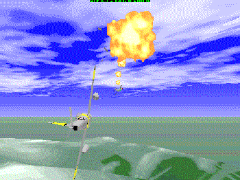
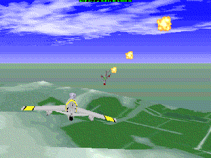

![[ TABLE OF CONTENTS ]](../gx/indexnew.gif)
![[ FRONT PAGE ]](../gx/homenew.gif)


I haven't written about Linux games for the Gazette, mainly because I don't play them much. Oh, every now and then while waiting for a download to complete I'll play Xgalaga or XEmacs-tetris for a while, but for me the real Linux amusement is figuring out how to compile, install, and use the numerous software packages lurking out on the net, unpublicized and just waiting to be explored.
A couple of days ago I was reading the current Need to Know British WWW news site, and I saw a mention of a Linux flight-simulator called Sabre. I ended up at the Sabre web-site and was impressed by the evident humor and good-nature of the site's developer (check out the page describing how to get sound working with the simulator!). Though I've seldom used flight-simulators, I decided to give this one a try.
 
The first public release of Sabre was in August of 1997, so it's a relatively new project. Don't expect a state-of-the-art flight-sim like the numerous commercial products available. Sabre is more similar to better-quality DOS flight-sims of a couple of years ago. The up-side to this is that expensive hardware (such as an ultra-fast processors or a 3DFX video-card) isn't needed in order for Sabre to run acceptably fast. This is an Svgalib console-graphics program so not even X is needed.
Sabre can be run in a variety of resolutions and window-sizes. Naturally a fast CPU will enable a larger and more detailed screen with minimal choppiness.
Frankly, I probably never would have written this review if Antti Barck's tremendously useful dialog-based script RunSabre hadn't been included in the distribution. Flight-simulator veterans probably will be able to learn to use Sabre without this script, but novices (like me) will find this interface to Sabre invaluable. It provides a convenient way to set the screen resolution, run various demo missions and flight scenarios, and access the documentation (especially the key-binding doc) from one menu-based screen. All of these tasks can be accomplished with command-line switches, but who wants to learn these while still deciding whether it's worth devoting time to learning a new application? Without this script, running Sabre can be a frustrating sequence of short flights followed by re-reading the docs after watching your jet crash yet another time.
Sabre offers quite an extensive array of view-points from which to observe your fighter-plane and the surrounding action. Naturally you can be in the cockpit and see forward, to the side, and behind, but you can also become a disembodied viewer off to one side. Even more interesting, a click of a key will put you in the cockpit of one of the enemy planes.
Your plane can be controlled with either a mouse, the keyboard, or a joystick (assuming joystick support is compiled into your kernel). I found controlling with a mouse difficult, whereas after some practice the keyboard seemed to provide more accurate control. I don't have a joystick so I was unable to try that method; I understand that flight-sim enthusiasts prefer them.
The first scenario in the RunSabre menu is called Just Fly. I was grateful for this choice; the last thing I needed while trying to figure out the controls was harassment by MIG fighters intent on my destruction! Several other flight scenarios are supplied, some involving aerial combat and others ground attack missions. These scenarios are interactive; the demo missions are more like short movies which display the variety of scenes Sabre is capable of displaying.
All in all Sabre is a quality piece of software. It compiled easily and I found no obvious bugs. The source or pre-compiled binaries can be obtained from the Sabre web-site linked at the beginning of this article.
Last modified: Sun 28 Jun 1998